Chapter 9 · 2/2第 9 章 · 解码与部署（2/2）
本页负责第 9 章的 9.11–9.20 号公式。它们属于原书 9.3.2 节（训练后量化方法）末尾的混合精度分解，以及 9.4 节（其他模型压缩方法：蒸馏与剪枝）。主线是"如何把一个训练好的 LLM 压小到能部署"：先按精度把权重拆成 INT8 与 FP16 两路算（9.11–9.14），再用大模型当老师把知识蒸给小模型（9.15–9.17），最后把结构化剪枝写成一个 min–max 优化问题（9.18–9.20）。文末四个补充小节把这一章最常被问到的几件事补齐：KV Cache 的显存账本、线性量化的误差来源与 INT4 显存、投机解码（speculative decoding）的无损性证明，以及三种并行策略的通信量对照。
原书位置第 9 章 9.3.2 Post-Training Quantization Methods / 9.4.1 Model Distillation / 9.4.2 Model Pruning · 补充：9.2.1 推理效率分析 / 9.2.2 系统级优化 / 9.2.3 算法级优化
本页公式一览
| 编号 | 一句话 | 核心数学工具 |
|---|---|---|
| 9.11 | 权重按列（absmax）量化成 INT8 | 对称量化、对角矩阵左乘 = 按列缩放 |
| 9.12 | INT8 × INT8 → INT32 整数矩阵乘 | 矩阵乘法展开、累加器位宽上界 |
| 9.13 | 整数结果反量化回 FP16 | Hadamard 积、外积分解 |
| 9.14 | 离群通道走 FP16 通路 | 分块计算 + 误差隔离 |
| 9.15 | 反馈式蒸馏：学生 logits 对齐老师分布 | softmax 交叉熵 = 熵 + KL、KL 的 logits 梯度 |
| 9.16 | 特征式蒸馏：中间层激活对齐 | 投影变换、MSE 梯度 |
| 9.17 | CoT 蒸馏：标签损失 + 思维链损失 | 多任务加权、梯度尺度 |
| 9.18 | 注意力头剪枝的拉格朗日约束项 | 拉格朗日对偶、线性罚 + 二次罚 |
| 9.19 | 剪枝写成 min–max 鞍点问题 | 极小极大、对偶性 |
| 9.20 | 展开：每层每种结构各带一组乘子 | 约束逐层实例化 |
| 补充 A | KV Cache 为什么能复用、占多少显存 | 因果掩码的独立性、字节计数 |
| 补充 B | 线性量化的误差分解与 INT4 显存账本 | 舍入误差方差 \(s^2/12\)、group-wise |
| 补充 C | 投机解码为什么不改变输出分布 | 修正拒绝采样、总变差距离 |
| 补充 D | 张量 / 流水 / 数据并行的通信量对照 | 通信量/计算量比、气泡率、分页注意力 |
本页符号约定
| 符号 | 含义 | 形状 / 量纲 |
|---|---|---|
| \(\mathbf{W}^{F_{16}},\mathbf{X}^{F_{16}}\) | FP16 的权重与激活（\(F_{16}\) = 16 位浮点） | \(\mathbb{R}^{d_{in}\times d_{out}}\) / \(\mathbb{R}^{T\times d_{in}}\) |
| \(\mathbf{W}^{I_8},\mathbf{X}^{I_8},\mathbf{O}^{I_{32}}\) | INT8 / INT32 表示，上标表示存储格式 | \(\mathbb{Z}^{d_{in}\times d_{out}}\) 等 |
| \(\mathbf{s}_{W},\mathbf{s}_{X}\) | 逐列 / 逐行的最大绝对值（absmax） | \(\mathbb{R}^{d_{out}}\) / \(\mathbb{R}^{T}\)，FP16 |
| \(\operatorname{diag}(\mathbf{v}),\odot,\otimes\) | 向量变对角矩阵；Hadamard 逐元素积；外积 | — |
| \(s,\;z,\;b\) | 缩放因子（浮点）、零点（整数）、量化位宽 | 标量；标量；\(\mathbb{N}\) |
| \(\mathbf{l}_{t},\mathbf{l}_{s},\;P_{t},P_{s}\) | 老师 / 学生的输出 logits 与 softmax 分布 | \(\mathbb{R}^{|\mathcal{V}|}\) |
| \(\theta,\mathbf{z}\) | 可训练参数；结构掩码变量 | \(\mathbb{R}^{d}\)；\(\{0,1\}^{N_{S}}\) 或 \([0,1]^{N_{S}}\) |
| \(N_{S},N_{T},L_{S}\) | 原模型头数 / 目标头数 / 层数 | 整数 |
| \(\lambda,\phi\) | 约束的拉格朗日乘子（线性罚 / 二次罚系数），非负 | 标量 |
| \(L,N,D,H\) | 层数 / 头数 / 单头维度 / 隐藏维度 \(H=ND\) | 整数 |
| \(S,B\) | 序列长度 / 批大小 | 整数 |
| \(p,q,\alpha,\gamma\) | 目标分布 / 草稿分布 / 接受率 / 草稿步数 | 概率分布；标量；整数 |
(9.11)权重量化到 INT8：逐列 absmax 对称量化#
出处第 9 章 9.3.2 节 Post-Training Quantization Methods（混合精度分解，LLM.int8()） 对照原文
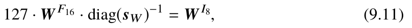
原书公式 9.11① 公式
② 符号
| 符号 | 含义 | 形状 / 量纲 |
|---|---|---|
| \(\mathbf{W}^{F_{16}}\) | 原始 FP16 权重矩阵 | \(\mathbb{R}^{d_{in}\times d_{out}}\)，元素为 FP16 |
| \(\mathbf{s}_{W}\) | 每一列的最大绝对值 | \(\mathbb{R}^{d_{out}}\)，FP16 |
| \(\operatorname{diag}(\mathbf{s}_{W})^{-1}\) | 对角元为 \(1/s_{W,j}\) 的对角阵 | \(\mathbb{R}^{d_{out}\times d_{out}}\) |
| \(\mathbf{W}^{I_8}\) | 量化后的 INT8 权重 | \(\mathbb{Z}^{d_{in}\times d_{out}}\)，元素 \(\in[-127,127]\) |
| \(127\) | \(2^{8-1}-1\)，INT8 对称量化的正最大码 | 整数常量 |
③ 推导
先回忆 9.3.1 节的线性（均匀）对称量化：\(x_q=\operatorname{round}(x/s)\)，\(s=\max\lvert x\rvert/(2^{b-1}-1)\)。这里是它的逐列版本。
- 为什么要逐列而不是整个张量共用一个 \(s\)？线性量化的绝对误差上界是 \(s/2\)，而 \(s\) 由被量化集合的最大绝对值决定。权重矩阵不同列的幅度可以差很多，用全矩阵的 \(\max\lvert w_{ij}\rvert\) 会被极端列"绑架"，其余列的步长被撑大、误差被放大。对每列单独取 absmax，等价于把矩阵切成 \(d_{out}\) 个独立的一维量化问题，各自用最贴合自己的步长。这就是 9.3.3 节"量化粒度越细精度越高"的直接体现（张量级 → 通道级）。
- 把"除以每列的 \(s_j\)"写成矩阵乘法。先做矩阵乘法的定义展开：\((\mathbf{A}\mathbf{B})_{ij}=\sum_k A_{ik}B_{kj}\)。若取 \(\mathbf{A}=\operatorname{diag}(\mathbf{s}_{W})\)，则 \[ (\operatorname{diag}(\mathbf{s}_{W})\mathbf{B})_{ij}=\sum_k \delta_{jk}s_{W,k}B_{kj}=s_{W,j}B_{ij}, \] 即左乘对角阵 = 把第 \(j\) 列整体乘以 \(s_{W,j}\)。所以要实现"第 \(j\) 列除以 \(s_{W,j}\)"，就取 \(\mathbf{A}=\operatorname{diag}(\mathbf{s}_{W})^{-1}\)，因为 \((\operatorname{diag}(\mathbf{s}_{W})^{-1}\mathbf{W}^{F_{16}})_{ij}=w_{ij}/s_{W,j}\)。
- 选 \(127\) 而不是 \(128\) 或 \(255\)。INT8 存储类型的取值范围是 \([-128,127]\)。若除以 \(128\)，则 \(-128\times128=-16384\) 需要额外一位来记录符号，浪费一个码字；取 \(2^{8-1}-1=127\) 时，\(-s\mapsto-127\)、\(+s\mapsto+127\)，正好用满 255 个码字且零点是整数 0 —— 这就是对称量化（\(z=0\)）的体现，好处是反量化只要乘一个 \(s\)，不需要减零点，硬件上更省。
- 误差上界。若暂不考虑 \(\operatorname{round}\)（原书式子省略了它，见下面的易错点），这一步的"量化误差"完全由舍入产生。反量化还原为 \(\hat{\mathbf{W}}=\mathbf{W}^{I_8}\operatorname{diag}(\mathbf{s}_{W})/127\)，第 \(j\) 列的元素满足 \[ \lvert \hat w_{ij}-w_{ij}\rvert\le s_{W,j}/2,\qquad \text{相对误差}\le \frac{1}{2\cdot127}\approx 0.39\%. \] 也就是说 INT8 权重带来的相对误差上限是 1/254，与列幅度无关。
- 为什么存 \(\mathbf{s}_{W}\) 就够了。反量化只需 \(\mathbf{s}_{W}\)（\(d_{out}\) 个 FP16 数），相比权重本身 \(d_{in}\times d_{out}\) 个数完全可以忽略。这是"量化参数开销"的说法：per-column 的开销是 \(2d_{out}\) 字节/矩阵，per-tensor 只要 4 字节，per-group（group size \(g\)）是 \(2\,d_{out}d_{in}/g\) 字节。
weight.abs().max(dim=0) 给的是每列 absmax，对应输出通道。
(9.12)INT8 整数矩阵乘，累加到 INT32#
出处第 9 章 9.3.2 节 Post-Training Quantization Methods 对照原文
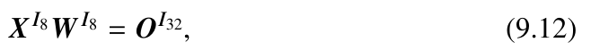
原书公式 9.12① 公式
② 符号
| 符号 | 含义 | 形状 / 量纲 |
|---|---|---|
| \(\mathbf{X}^{I_8}\) | 量化后的 INT8 激活 | \(\mathbb{Z}^{T\times d_{in}}\)，元素 \(\in[-127,127]\) |
| \(\mathbf{W}^{I_8}\) | 式 (9.11) 的 INT8 权重 | \(\mathbb{Z}^{d_{in}\times d_{out}}\) |
| \(\mathbf{O}^{I_{32}}\) | 整数累加结果 | \(\mathbb{Z}^{T\times d_{out}}\) |
| \(T,d_{in},d_{out}\) | token 数 / 输入维 / 输出维 | 整数，LLaMA-7B 中 \(d_{in}=d_{out}=4096\) |
③ 推导
- 为什么这一步"完全精确"。式 (9.11) 只做了缩放，没有引入舍入（见 9.11 的易错点）。若把舍入补上，则真实计算是 \(\mathbf{X}^{F_{16}}\mathbf{W}^{F_{16}}\approx\bigl(\mathbf{X}^{I_8}\operatorname{diag}(\mathbf{s}_X)/127\bigr)\bigl(\mathbf{W}^{I_8}\operatorname{diag}(\mathbf{s}_{W})/127\bigr)\)。中间的矩阵积 \(\mathbf{X}^{I_8}\mathbf{W}^{I_8}\) 两侧都是整数，所以这一乘是整数乘整数、精确无误差的；所有误差都被推迟到反量化那一步（式 9.13）。这就是混合精度分解的核心工程价值：把"贵的浮点乘法"换成"便宜且精确的整数乘法"。
- 累加器为什么必须用 INT32。取绝对值最大的情形 \(\lvert X^{I_8}_{ik}\rvert\le127,\ \lvert W^{I_8}_{kj}\rvert\le127\)，由三角不等式 \[ \lvert O^{I_{32}}_{ij}\rvert\le\sum_{k}\lvert X^{I_8}_{ik}W^{I_8}_{kj}\rvert\le T\cdot127^{2}=T\cdot16129. \] 代入 LLaMA-7B 的解码场景：\(T=2048\) 时上界 \(3.3\times10^{7}\)。而 INT16 的上限只有 \(2^{15}-1=32767\)，会溢出；INT32 上限 \(2^{31}-1\approx2.1\times10^{9}\)，即使 \(T=131072\) 也不会溢出。这就是为什么 Tensor Core 的 INT8 指令是"int8 输入 / int32 累加"（如 HMMA.16816），输出类型与输入不同。
- 算力与带宽收益。FLOP 数完全由矩阵尺寸决定（\(2T d_{in}d_{out}\)），与数据类型无关；收益来自每次运算的字节数：INT8 每元素 1 字节，是 FP16 的 \(1/2\)、FP32 的 \(1/4\)。同时 INT8 Tensor Core 的峰值吞吐通常是同卡 FP16 的 2 倍（对 4-bit 更高）。所以这是"少搬一半字节 + 算得更快"的双重收益。
- 为什么这一步对离群值不友好。INT8 的码字范围是 \([-127,127]\)。若某一行激活里有一个 \(\lvert x\rvert\) 极大（离群通道），整行 absmax 被它拉大，\(s_{X,i}\) 变大，其余元素 \(x/s\) 全部挤到 0 附近，舍入后大量变成 0 —— 信息被彻底抹掉。这正是式 (9.14) 要把离群维单独拿出来用 FP16 算的原因。
(9.13)反量化：把 INT32 结果乘回 \(s_{X}s_{W}\)#
出处第 9 章 9.3.2 节 Post-Training Quantization Methods 对照原文
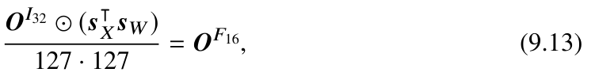
原书公式 9.13① 公式
② 符号
| 符号 | 含义 | 形状 / 量纲 |
|---|---|---|
| \(\mathbf{O}^{I_{32}}\) | 式 (9.12) 的整数结果 | \(\mathbb{Z}^{T\times d_{out}}\) |
| \(\mathbf{s}_{X}\) | 激活每一行的 absmax | \(\mathbb{R}^{T}\) |
| \(\mathbf{s}_{W}\) | 权重每一列的 absmax（式 9.11） | \(\mathbb{R}^{d_{out}}\) |
| \(\mathbf{s}_{X}^{\top}\mathbf{s}_{W}\) | 外积，第 \((i,j)\) 元为 \(s_{X,i}s_{W,j}\) | \(\mathbb{R}^{T\times d_{out}}\) |
| \(\odot\) | 逐元素乘（Hadamard 积） | — |
| \(\mathbf{O}^{F_{16}}\) | 非离群部分的 FP16 输出 | \(\mathbb{R}^{T\times d_{out}}\) |
③ 推导
目标：证明 \(\mathbf{O}^{F_{16}}\) 恰好等于"把两个量化矩阵各自还原回 FP16 再相乘"的结果。
- 写出反量化算子。对称量化的反量化是 \(\hat{\mathbf{X}}=\mathbf{X}^{I_8}\operatorname{diag}(\mathbf{s}_{X})/127\)，\(\hat{\mathbf{W}}=\mathbf{W}^{I_8}\operatorname{diag}(\mathbf{s}_{W})/127\)。目标是 \(\hat{\mathbf{X}}\hat{\mathbf{W}}\)。
- 展开目标矩阵的第 \((i,j)\) 元。按矩阵乘法定义逐步化简（每一步都是"对角阵左乘 = 按行缩放"）： \[ (\hat{\mathbf{X}}\hat{\mathbf{W}})_{ij}=\sum_{k}\frac{X^{I_8}_{ik}s_{X,i}}{127}\cdot\frac{W^{I_8}_{kj}s_{W,j}}{127} =\frac{s_{X,i}s_{W,j}}{127^{2}}\sum_{k}X^{I_8}_{ik}W^{I_8}_{kj}. \] 括号里的和正是 \(O^{I_{32}}_{ij}\)（式 9.12）。
- 提出与 \(k\) 无关的因子。\(s_{X,i}s_{W,j}\) 不依赖求和指标 \(k\)，可以整体提出： \[ (\hat{\mathbf{X}}\hat{\mathbf{W}})_{ij}=\frac{1}{127^{2}}\cdot s_{X,i}s_{W,j}\cdot O^{I_{32}}_{ij}. \] 把矩阵形式写出来，就是 \(\mathbf{O}^{F_{16}}=\bigl(\mathbf{O}^{I_{32}}\odot(\mathbf{s}_{X}\mathbf{1}^{\top}\odot\mathbf{1}\mathbf{s}_{W}^{\top})\bigr)/127^{2}\)。由于所有 \(s\) 都为正，两两乘积可以合并成一个外积：\(\mathbf{s}_{X}\mathbf{s}_{W}^{\top}\) 的第 \((i,j)\) 元恰好是 \(s_{X,i}s_{W,j}\)。这就是式 (9.13)，其中 \(\odot\) 是逐元素乘。
- 关键结论：反量化是"逐元素"的，不需要再乘矩阵。式 (9.13) 只需 \(T\cdot d_{out}\) 次乘法和 \(2T d_{out}\) 次读 scale —— 相对于主乘法 \(2Td_{in}d_{out}\) FLOP 是 \(O(1/d_{in})\) 量级的开销，可以忽略。
- 这一式把"误差"完整地暴露出来。与 \(\mathbf{X}^{F_{16}}\mathbf{W}^{F_{16}}\) 相比，误差有两个来源：(a) 舍入，\(\lvert w_{kj}-\hat w_{kj}\rvert\le s_{W,j}/2\)、\(\lvert x_{ik}-\hat x_{ik}\rvert\le s_{X,i}/2\)，通过求和累积；(b) FP16 本身的舍入。反量化把 (a) 一次性乘回去，所以"误差被乘以 scale"这件事在这里显式出现：步长 \(s\) 大的列，误差也大。
(9.14)离群通道的 FP16 直算通路#
出处第 9 章 9.3.2 节 Post-Training Quantization Methods 对照原文
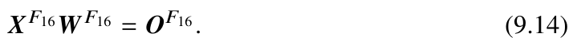
原书公式 9.14① 公式
② 符号
| 符号 | 含义 | 形状 / 量纲 |
|---|---|---|
| \(\mathcal{O}\) | 离群通道下标的集合（LLM.int8() 取 \(\lvert x_j\rvert>6.0\) 的维） | \(\mathcal{O}\subseteq\{1,\dots,d_{in}\}\)，\(\lvert\mathcal{O}\rvert\ll d_{in}\) |
| \(\mathbf{X}_{\mathcal{O}},\mathbf{W}_{\mathcal{O}}\) | 只在离群通道上取的列子矩阵 | \(\mathbb{R}^{T\times\lvert\mathcal{O}\rvert}\)、\(\mathbb{R}^{\lvert\mathcal{O}\rvert\times d_{out}}\) |
| \(\mathbf{O}\) | 两路结果相加的最终输出 | \(\mathbb{R}^{T\times d_{out}}\) |
③ 推导
- 先确认现象。9.3.2 节 Fig. 9.7a 的 LLaMA-7B 激活分布显示：存在少数几个通道，其绝对值显著大于其他通道（实验上量级差 1–2 个数量级）。这些通道在 Transformer 层的位置基本固定，且跨输入、跨 token 持续存在 —— 说明它们来自某些权重列的量级过大（是系统性偏置，不是噪声）。
- 为什么离群值会毁掉 INT8 量化。式 (9.13) 的 scale \(s_{X,i}\) 是该行 absmax。若离群通道绝对值是普通通道的 \(10^{2}\) 倍，则 \(s_{X,i}\) 也大 \(10^{2}\) 倍，量化步长 \(s=s_{X,i}/127\) 随之大 \(10^{2}\) 倍。普通通道的 \(x/s\) 落在 \([-10^{-2},10^{-2}]\)，四舍五入后全部变成 0 —— 它们被彻底清零。相对误差从 1/254 恶化到 100%。
- 分块计算（混合精度分解）。矩阵乘法对求和是线性的，可以把输入维拆成不相交的两块分别算再相加： \[ \sum_{k=1}^{d_{in}}x_{ik}w_{kj}=\sum_{k\in\mathcal{N}}x_{ik}w_{kj}+\sum_{k\in\mathcal{O}}x_{ik}w_{kj}, \] 其中 \(\mathcal{N}\) 是非离群通道、\(\mathcal{O}\) 是离群通道。这是一个恒等变形，不引入任何额外近似。
- 两路各自选精度。非离群路 \(\mathcal{N}\)：数值范围正常，用 INT8（式 9.10–9.13），步长小、带宽省。离群路 \(\mathcal{O}\)：数值极大，用 FP16 直接算（式 9.14），完全避免量化；由于 \(\lvert\mathcal{O}\rvert\) 很小（例如 \(d_{in}=4096\) 里只有几个），这一路的 FLOP 与访存占比极小。最后把两路结果相加。
- 为什么"分块求和"没有抵消误差的风险。两路结果在 FP16/FP32 下相加，只引入一次加法舍入；而离群项的量级远大于非离群项的量化噪声，所以相加时非离群项的有效位反而被"淹没"得更多 —— 这是 LLM.int8() 真正的取舍：牺牲非离群部分的一点精度，换来离群部分不被清零。反过来，如果所有维度都留在 INT8 路，离群维度本身的误差会小，但它把 \(s_X\) 撑大，伤害的是全部其他维度。
(9.15)反馈式蒸馏：对齐 softmax 后的分布#
出处第 9 章 9.4.1 节 Model Distillation（反馈式知识蒸馏） 对照原文
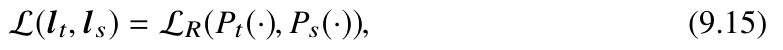
原书公式 9.15① 公式
② 符号
| 符号 | 含义 | 形状 / 量纲 |
|---|---|---|
| \(\mathbf{l}_{t},\mathbf{l}_{s}\) | 老师 / 学生最后一层的 logits（未归一化打分） | \(\mathbb{R}^{\lvert\mathcal{V}\rvert}\) |
| \(P_{t},P_{s}\) | 对应的 softmax 概率分布（"软标签"） | \(\mathbb{R}^{\lvert\mathcal{V}\rvert}\)，各自和为 1 |
| \(\mathcal{L}_{R}\) | 两个分布之间的散度，原书说通常取 KL | 标量，nat |
| \(T\) | 温度（softmax 的除数），\(T>0\)；\(T=1\) 为标准 | 标量 |
| \(\mathcal{V}\) | 词表 | \(\lvert\mathcal{V}\rvert\sim10^{4}\!-\!10^{5}\) |
③ 推导
- 为什么"对齐分布"等价于"对齐交叉熵"。取 \(\mathcal{L}_{R}=\mathrm{KL}(P_{t}\|P_{s})=\sum_{v}P_{t}(v)\ln\frac{P_{t}(v)}{P_{s}(v)}\)。把它展开： \[ \mathrm{KL}(P_{t}\|P_{s})=\underbrace{\sum_v P_{t}(v)\ln P_{t}(v)}_{-H(P_{t})}-\sum_v P_{t}(v)\ln P_{s}(v)=-H(P_{t})+H(P_{t},P_{s}). \] \(H(P_{t})\) 只依赖老师，与学生参数无关，因此 \[ \min_{\theta}\mathrm{KL}(P_{t}\|P_{s})=\min_{\theta}\mathcal{H}(P_{t},P_{s})-H(P_{t})\iff \min_{\theta}\mathcal{H}(P_{t},P_{s}). \] 结论：让学生去拟合软标签的交叉熵，和最小化 KL 是同一个优化问题（相差一个常数）。这就是式 (9.15) 可以写成散度的依据。
- 软标签为什么比 0-1 标签信息更多。假设真值是 "club"。老师给出 \(P_t(\text{club})=0.6\)、\(P_t(\text{church})=0.3\)、\(P_t(\text{meditation})=0.05\)。0-1 标签只告诉学生"club 对、其余错"；软标签额外告诉学生"church 和 club 的相似度远高于 meditation"，即类别之间的结构。这正是 Hinton 蒸馏的核心直觉。
- 推一下 KL 对学生 logits 的梯度（这一步原书没写）。设 \(P_{s}(v)=\frac{e^{l_{s,v}/T}}{\sum_{u}e^{l_{s,u}/T}}\)。先对 \(P_{s}(v)\) 求导：由 \(\frac{\partial}{\partial l_{s,j}}e^{l_{s,v}/T}=\frac1T e^{l_{s,v}/T}\delta_{vj}\) 与商法则，得 softmax 的标准雅可比
\[
\frac{\partial P_{s}(v)}{\partial l_{s,j}}=\frac1T P_{s}(v)\bigl(\delta_{vj}-P_{s}(j)\bigr).
\]
再用链式法则（雅可比形式 \(\nabla_{l_s}\mathrm{KL}=\frac{\partial \mathrm{KL}}{\partial P_s}\cdot\frac{\partial P_s}{\partial l_s}\)，前者是行向量、后者是矩阵）：
\[
\frac{\partial \mathrm{KL}}{\partial l_{s,j}}=\frac1T\Bigl[\sum_v P_{t}(v)\ln\frac{P_t(v)}{P_s(v)}\bigl(\delta_{vj}-P_{s}(j)\bigr)\Bigr].
\]
逐项算：\(\sum_v P_{t}(v)\ln\frac{P_t(v)}{P_s(v)}\delta_{vj}=P_t(j)\ln\frac{P_t(j)}{P_s(j)}\)；\(\sum_v P_{t}(v)\ln\frac{P_t(v)}{P_s(v)}P_{s}(j)=P_{s}(j)\cdot(-\mathrm{KL})\)。于是
\[
\frac{\partial \mathrm{KL}(P_t\|P_s)}{\partial l_{s,j}}=\frac{1}{T}\Bigl[P_s(j)\ln\frac{P_s(j)}{P_t(j)}-\bigl(\mathrm{KL}+P_s(j)\ln\frac{P_t(j)}{P_s(j)}\bigr)\Bigr].
\]
在 \(P_s=P_t\) 处，\(\ln\frac{P_s(j)}{P_t(j)}=0\) 且 \(\mathrm{KL}=0\)，梯度简化为
\[
\frac{\partial \mathrm{KL}(P_t\|P_s)}{\partial l_{s,j}}\bigg|_{P_s=P_t}=\frac{P_{s}(j)-P_{t}(j)}{T},
\]
即"把学生概率往老师概率上拉"。这个式子就是
CrossEntropy(logits, teacher_probs)的实现依据。 - 温度 \(T\) 的作用。softmax 里除以 \(T\) 后分布被"软化"：最大概率被压低、小概率被抬高，暴露出类别之间的相对关系（logit 差被除以 \(T\)）。若 \(T\to\infty\)，梯度 \(\propto 1/T\to0\)，训练停滞 —— 所以蒸馏必须用有限温度，且通常 \(T=2\sim4\)。
- 前向 KL vs 反向 KL。式 (9.15) 写的是 \(\mathrm{KL}(P_t\|P_s)\)：真分布是老师，属于前向（mass-covering，覆盖模式） KL，梯度形式如第 3 步，会对"老师有概率但学生给 0"的类别施加大惩罚，倾向覆盖所有模式。若改用 \(\mathrm{KL}(P_s\|P_t)\)，梯度里出现 \(\ln\frac{P_s}{P_t}\) 的额外因子，当 \(P_t(j)\to0\) 时该项爆炸，倾向只保住老师的一个峰（mode-seeking），输出更"锐利"但多样性差。
(9.16)特征式蒸馏：中间层激活对齐#
出处第 9 章 9.4.1 节 Model Distillation（特征式知识蒸馏） 对照原文
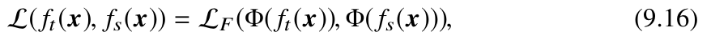
原书公式 9.16① 公式
② 符号
| 符号 | 含义 | 形状 / 量纲 |
|---|---|---|
| \(\mathbf{x}\) | 输入样本（batch 内可含 \(T\) 个 token） | \(\mathbb{R}^{d_{in}}\) |
| \(f_{t},f_{s}\) | 老师 / 学生某中间层的激活（hidden state） | \(\mathbb{R}^{d_{t}}\)、\(\mathbb{R}^{d_{s}}\)，一般 \(d_{t}\ne d_{s}\) |
| \(\Phi(\cdot)\) | 形状对齐变换（投影 / 卷积 / 注意力对齐） | 把 \(\mathbb{R}^{d_{t}}\) 映到 \(\mathbb{R}^{d_{s}}\) |
| \(\mathcal{L}_{F}\) | 相似度度量（MSE、余弦距离等） | 标量 |
③ 推导
- 为什么需要 \(\Phi\)。式 (9.15) 只约束最后一层输出，信息通道窄；中间层激活携带"第 \(l\) 层学到了什么表示"。但学生更小，隐藏维度通常不同（如 7B 的 \(d_t=4096\) vs 1B 的 \(d_s=2048\)），所以不能直接相减。最常见的 \(\Phi\) 是一个线性投影 \(A\in\mathbb{R}^{d_{s}\times d_{t}}\)（实现上等价于 \(1\times1\) 卷积）：\(\Phi(\mathbf{h})=A\mathbf{h}\)。此时 \(A\) 是可训练参数，与学生参数一起优化。
- 取 \(\mathcal{L}_{F}\) 为均方误差，写出完整损失。对 batch 内所有 token 求平均： \[ \mathcal{L}_{F}=\frac{1}{T}\sum_{i=1}^{T}\bigl\lVert A f_{t}(\mathbf{x}_{i})-f_{s}(\mathbf{x}_{i})\bigr\rVert_{2}^{2} =\frac{1}{T}\sum_i\bigl(A f_{t,i}-f_{s,i}\bigr)^{\top}\bigl(A f_{t,i}-f_{s,i}\bigr). \]
- 求梯度（最小二乘的标准结果，用链式法则与雅可比形状写清）。设残差 \(\mathbf{r}_{i}=A f_{t,i}-f_{s,i}\in\mathbb{R}^{d_{s}}\)。对 \(A\) 求导时把 \(\mathbf{r}_{i}\) 看作常数： \[ \nabla_{A}\mathcal{L}_{F}=-\frac{2}{T}\sum_i \mathbf{r}_{i}\,f_{t,i}^{\top}\in\mathbb{R}^{d_{s}\times d_{t}},\qquad \nabla_{f_{s,i}}\mathcal{L}_{F}=\frac{2}{T}A^{\top}\mathbf{r}_{i}\in\mathbb{R}^{d_{s}}. \] \(\nabla_{f_{s,i}}\) 再经学生自身的反向传播（\(f_{s}\) 是学生若干层的复合，按链式法则逐层回传到 \(\theta\)）。
- 为什么通常要先归一化再比较。不同层激活的范数相差几个数量级（深层激活范数往往大得多），直接做 MSE 会让深层的项主导总损失，学到的是"对齐幅度"而非"对齐方向"。因此常用 \(\Phi\) 输出后再做 LayerNorm，或改用余弦相似度损失 \(1-\frac{\langle\Phi(f_t),f_s\rangle}{\lVert\Phi(f_t)\rVert\lVert f_s\rVert}\)。注意此时第 3 步的梯度形式不再适用（要再链一层归一化的雅可比）。
- 逐层监督的收益与代价。收益：把"对齐"从 1 个约束变成 \(L_{S}\) 个约束，梯度信号更密；代价：需要选哪些层对齐（一般是若干均匀间隔的层），并且要处理 token 级对齐问题 —— 老师学生的隐状态是逐位置的，学生可能因为上一个 token 预测不同而"错位"。这是原书提到的"层选择与结构不一致"两大实践难题。
(9.17)CoT 蒸馏：标签损失 + 思维链损失#
出处第 9 章 9.4.1 节 Model Distillation（LLM 的知识蒸馏方法，Example 9.2） 对照原文
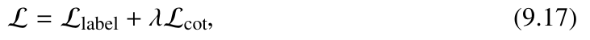
原书公式 9.17① 公式
② 符号
| 符号 | 含义 | 形状 / 量纲 |
|---|---|---|
| \(\mathcal{L}_{label}\) | 最终答案标签的预测损失（交叉熵） | 标量，nat；只对答案 token 计 |
| \(\mathcal{L}_{cot}\) | 生成思维链文本的 token 级交叉熵 | 标量，nat；对 CoT token 求平均 |
| \(\lambda\) | 组合系数，控制"学推理"与"学答案"的比重 | 标量，非负 |
③ 推导
- 先把两项写成具体形式。设构造好的训练文本为 \(\mathbf{y}=(c_{1},\dots,c_{m},\text{ans})\)：前 \(m\) 个是老师生成的思维链，最后是答案。 \[ \mathcal{L}_{cot}=-\frac{1}{m}\sum_{k=1}^{m}\log P_{\theta}(c_{k}\mid \mathbf{prompt},c_{<k}),\qquad \mathcal{L}_{label}=-\log P_{\theta}(\text{ans}\mid \mathbf{prompt},c_{1:m}), \] （式 9.15 的软标签版本可以把第二项换成式 9.15 的 KL。）总损失就是 (9.17)。
- 梯度就是两项梯度之和。由求导的线性性， \[ \nabla_{\theta}\mathcal{L}=\nabla_{\theta}\mathcal{L}_{label}+\lambda\,\nabla_{\theta}\mathcal{L}_{cot}. \] 所以 \(\lambda\) 的物理含义是"思维链梯度的放大倍数"。\(\lambda=0\) 退化成纯 SFT；\(\lambda\to\infty\) 时模型只学推理过程、答案反而变差。
- 为什么不能直接令 \(\lambda=1\)。两项的有效样本数不同：\(\mathcal{L}_{label}\) 通常只对 1 个答案 token（或几个选项 token）求平均，梯度范数较大；\(\mathcal{L}_{cot}\) 对上百个 CoT token 求平均，单个 token 的梯度被稀释。若两者梯度范数相近，取 \(\lambda=1\) 会让 CoT 项主导甚至淹没标签项。实践中 \(\lambda\) 常取 \(0.1\sim1\)，并配合"课程式"两阶段训练（先用 CoT 数据做第一阶段，再混合标签数据做第二阶段）。
- 一个容易被忽略的前提：teacher forcing。\(\mathcal{L}_{cot}\) 的每一项都是"给定前缀 + 老师写的上一个 token"下的似然，这与推理时"给定自己写的 token"存在曝光偏差（exposure bias）。所以蒸馏 CoT 只能让学生模仿推理的表面形式，不保证推理能力真的被泛化出来。
(9.18)注意力头剪枝的约束项（线性罚 + 二次罚）#
出处第 9 章 9.4.2 节 Model Pruning（Sheared LLaMA 的结构化剪枝） 对照原文
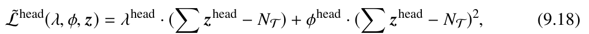
原书公式 9.18① 公式
② 符号
| 符号 | 含义 | 形状 / 量纲 |
|---|---|---|
| \(\mathbf{z}^{\mathrm{head}}\) | 掩码向量，\(z^{\mathrm{head}}_{i}=0\) 表示删掉第 \(i\) 个头 | \(\{0,1\}^{N_{S}}\)（可松弛为 \([0,1]^{N_{S}}\)） |
| \(\sum\mathbf{z}^{\mathrm{head}}\) | 被保留的头数 | 整数，取值 \([0,N_{S}]\) |
| \(N_{S}\) | 原模型的注意力头总数 | 整数，LLaMA-7B 中 \(32\times32=1024\) |
| \(N_{T}\) | 目标结构（保留）的头数 | 整数，\(N_{T}\) 小于 \(N_{S}\) |
| \(\lambda^{\mathrm{head}}\) | 线性罚的乘子（等价于"超预算的影子价格"） | 标量，非负 |
| \(\phi^{\mathrm{head}}\) | 二次罚系数（增广拉格朗日 / 近点项的步长） | 标量，正数 |
| \(\tilde{\mathcal{L}}^{\mathrm{head}}\) | 把约束"软化"成的损失项 | 标量（乘子量纲 × 头数） |
③ 推导
先回忆拉格朗日乘子法：要解 \(\min_{x}f(x)\;\mathrm{s.t.}\;c(x)\le0\)，把约束写成 \(c(x)\le0\)，构造 \(\mathcal{L}(x,\lambda)=f(x)+\lambda\,c(x)\)，对 \(\lambda\ge0\) 取 \(\max\)、对 \(x\) 取 \(\min\)。原理是"把约束当罚项，罚的力度 \(\lambda\) 由优化过程自己调出来"。下面把这个套路套到剪枝上。
- 写出真正的约束。剪枝的意图是"每层保留不超过 \(N_{T}\) 个头"： \[ c^{\mathrm{head}}(\mathbf{z})=\sum\mathbf{z}^{\mathrm{head}}-N_{T}\le0. \] 记 \(r=\sum\mathbf{z}^{\mathrm{head}}-N_{T}\)。\(r>0\) 表示超预算（想留的头太多），\(r=0\) 表示刚好，\(r\) 为负表示剪得更狠。
- 线性罚项在 \(\max_{\lambda\ge0}\) 下是什么行为？固定 \(\mathbf{z}\)，看 \(\max_{\lambda\ge0}\lambda\,r\)：
- 若 \(r\le0\)，\(\lambda r\) 关于 \(\lambda\) 单调不增，最大值在 \(\lambda=0\) 处取得，等于 \(0\) —— 不超预算时完全不罚。
- 若 \(r>0\)，\(\lambda r\) 随 \(\lambda\) 增大而增大到 \(+\infty\) —— 超预算时惩罚无穷大，于是外层的 \(\min_{\mathbf{z}}\) 会把可行域推向 \(r\le0\)。
- 二次罚项在 \(\max_{\phi\ge0}\) 下的行为。\(\max_{\phi\ge0}\phi r^{2}\)：\(r\ne0\) 时最大值 \(+\infty\)，\(r=0\) 时恒为 0。所以它对任何偏离 \(N_{T}\) 的行为都给无穷惩罚 —— 包括 \(r\) 为负（剪过头）。这是"增广拉格朗日函数"（Augmented Lagrangian）里的标准修正项：在 \(\lambda r\) 之外加 \(\frac{\rho}{2}c^{2}\)，用来在数值上稳定乘子更新、加速收敛（近点拉格朗日方法，proximal / augmented Lagrangian）。
- 把两步合起来就是式 (9.18)。\(\tilde{\mathcal{L}}^{\mathrm{head}}=\lambda^{\mathrm{head}}r+\phi^{\mathrm{head}}r^{2}\)。它在 \(\max_{\lambda,\phi\ge0}\) 下的"值函数"是 \[ \tilde{\mathcal{L}}^{\mathrm{head}}(\mathbf{z})=\begin{cases}+\infty, & r\ne0\\ 0, & r=0\end{cases} \] 即一个"理想指示函数"的可微化替代：真正的指示函数在 \(r\ne0\) 处不可微没法训练，\(\lambda r+\phi r^{2}\) 提供了方向（梯度）。
- 为什么要线性罚和二次罚都要。只有线性罚（\(\phi=0\)）时是标准拉格朗日对偶：需要 \(\mathbf{z}\) 与 \(\lambda\) 交替更新，且乘子更新 \(\lambda\leftarrow[\lambda+\eta r]_{+}\) 收敛慢。二次项相当于给 \(\lambda\) 一个"更好的初值 / 更大步长"，实践中更容易稳定下来。同时它对 \(r\) 为负的惩罚把解推回约束边界—— 避免"为了少参数而把网络剪到远小于目标规模却仍然下降损失"（因为 \(\min\) 阶段本来偏好更小的 \(\sum\mathbf{z}\)）。
- 为什么这个写法还必须解决"离散性"问题。\(\mathbf{z}\in\{0,1\}^{N_{S}}\)，目标函数对 \(z_{i}\) 不可微（梯度为 0）。所以 Sheared LLaMA 实际优化时把 \(\mathbf{z}\) 松弛为 \([0,1]\)（或用直通估计、Gumbel-softmax），让梯度能流过去，再在推理时按阈值二值化。原书写 \(\mathbf{z}\in\mathbb{R}^{N_{S}}\) 且取 0/1 值，是对最终解的描述，不是对优化过程的描述。
(9.19)剪枝写成 min–max 鞍点问题#
出处第 9 章 9.4.2 节 Model Pruning 对照原文
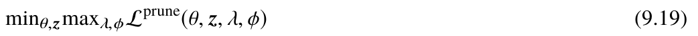
原书公式 9.19① 公式
② 符号
| 符号 | 含义 | 形状 / 量纲 |
|---|---|---|
| \(\theta\) | 模型权重（被继续训练，不是冻结） | \(\mathbb{R}^{d}\)，\(d\sim10^{9}\!-\!10^{11}\) |
| \(\mathbf{z}\) | 所有结构的掩码变量（头 / 中间维 / 层 / 隐藏维） | \(\{0,1\}^{\sum}\) 或松弛后的 \([0,1]^{\sum}\) |
| \(\lambda,\phi\) | 各约束对应的乘子向量 | 非负标量或向量 |
| \(\mathcal{L}^{\mathrm{prune}}\) | 完整目标（含所有约束项） | 标量 |
| \(\min\max\) | 极小极大：外层对 \((\theta,\mathbf{z})\) 取 min，内层对 \((\lambda,\phi)\) 取 max | — |
③ 推导
- 从约束优化到 min–max。原问题 \(\min_{\theta,\mathbf{z}}\mathcal{L}(\theta,\mathbf{z})\;\mathrm{s.t.}\;c_{k}(\theta,\mathbf{z})\le0,\;k=1..K\)。拉格朗日函数 \(\mathcal{L}^{p}=\mathcal{L}+\sum_k\lambda_k c_k\)，对偶函数 \(g(\lambda)=\inf_{\theta,\mathbf{z}}\mathcal{L}^{p}\)，对偶问题 \(\max_{\lambda\ge0}g(\lambda)\)。拉格朗日弱对偶定理（对任意可行解与任意 \(\lambda\ge0\) 都有 \(f(x^{*})\le \mathcal{L}^{p}(x^{*},\lambda)\)）给出的下界，在满足 Slater 条件（存在严格可行点，即存在 \(\mathbf{z}\) 使所有 \(c_k\) 严格为负）且目标函数凸的情形下可以达到，此时原问题与 (9.19) 同解。这里严格可行点是存在的（取 \(\mathbf{z}=\mathbf{0}\) 即全部剪掉，则 \(r=-N_{T}<0\)），但 \(\mathcal{L}(\theta,\mathbf{z})\) 对 \(\theta\) 非凸，所以只能保证"下界"，实际效果靠实验验证。
- 把它读成零和博弈。两个玩家：剪枝者选 \((\theta,\mathbf{z})\) 想让目标小；监管者选 \((\lambda,\phi)\) 非负、想让罚项大。\(\max\) 就是"监管者对当前方案开出最贵的罚单"，\(\min\) 就是"剪枝者在现有罚单下改进方案并压低总损失"。
- 最优响应的方向正好是我们想要的。给定 \((\lambda,\phi)\)，剪枝者对 \(\theta\) 的最优响应是"在当前硬约束下把损失降到最低"—— 等价于给定结构预算后的最优训练；对 \(\mathbf{z}\) 的最优响应是"删掉那些边际收益最小的头"。给定 \((\theta,\mathbf{z})\)，监管者的最优响应是 \(\lambda_{k}\leftarrow[\lambda_{k}+\eta\,c_{k}(\theta,\mathbf{z})]_{+}\)：超预算就涨价，不超预算就降价到 0。这就是 9.18 第 2 步那个"影子价格"机制的算法形式。
- 交替优化的收敛性。实际训练用 block coordinate ascent：固定 \((\lambda,\phi)\) 用 SGD 更新 \((\theta,\mathbf{z})\)（内层 min），再用上面的投影梯度更新乘子（外层 max），循环。因为约束集在连续松弛后是凸多面体（\(\{0\le\mathbf{z}\le1:\sum\mathbf{z}\le N_{T}\}\)）、\(\mathcal{L}\) 非凸但通常经验上稳定，所以这个 min–max 一般能得到"损失可接受 + 结构达标"的解，不保证全局最优。
- 为什么这个 min–max 比"直接写死剪枝率"更好。不同层、不同位置的头的重要性差别很大：少数头几乎不能删，删掉就崩；多数头随便删。如果按固定比例对每层剪 30%，会砍掉某些关键层。min–max 的好处是每层各有一个独立的价格，重要的地方价格被抬得高、自动少剪，不重要的地方多剪 —— 这就是原书说的"在剪枝比例与模型性能之间做 trade-off"。
(9.20)展开的完整剪枝目标：逐层 × 逐结构各带一组乘子#
出处第 9 章 9.4.2 节 Model Pruning 对照原文
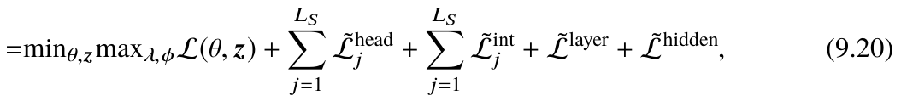
原书公式 9.20① 公式
② 符号
| 符号 | 含义 | 形状 / 量纲 |
|---|---|---|
| \(\mathcal{L}(\theta,\mathbf{z})\) | 施加掩码后的语言模型损失（交叉熵） | 标量，nat |
| \(\tilde{\mathcal{L}}^{\mathrm{head}}_{j}\) | 第 \(j\) 层的注意力头约束项（同 9.18 结构，\(r=\sum\mathbf{z}^{\mathrm{head}}_{j}-N_{T}^{\mathrm{head}}\)） | 标量，\(j=1..L_{S}\) |
| \(\tilde{\mathcal{L}}^{\mathrm{int}}_{j}\) | 第 \(j\) 层 FFN 中间维（intermediate size）约束项 | 标量，\(j=1..L_{S}\) |
| \(\tilde{\mathcal{L}}^{\mathrm{layer}}\) | 层数约束项（总共保留几层） | 标量 |
| \(\tilde{\mathcal{L}}^{\mathrm{hidden}}\) | 隐藏维 \(H\) 的约束项 | 标量 |
| \(L_{S}\) | 原模型层数 | 整数，LLaMA-7B 中 32 |
③ 推导
- 为什么约束要"逐层实例化"。我们真正想要的压缩比是"全局"的（例如从 7B 压到 2.7B），但 Transformer 各层是串联的：压掉一层会改变后续所有层的输入分布。所以必须给每层单独设预算，而不是均摊。式 (9.20) 里 \(\sum_{j=1}^{L_{S}}\tilde{\mathcal{L}}^{\mathrm{head}}_{j}\) 就是 \(L_{S}\) 个独立约束 \(c^{\mathrm{head}}_{j}\le0\)，每个配自己的乘子 \((\lambda^{\mathrm{head}}_{j},\phi^{\mathrm{head}}_{j})\)，共 \(2L_{S}\) 个乘子。
- 为什么除了逐层约束，还要两个全局约束。\(\tilde{\mathcal{L}}^{\mathrm{layer}}\) 针对"层数"这个无法用 head / int 掩码表达的结构（LLaMA-2 的层数由 40 减到 32 就是靠删整层）；\(\tilde{\mathcal{L}}^{\mathrm{hidden}}\) 针对隐藏维 \(H\) —— 它同时出现在注意力（\(W^{Q},W^{K},W^{V},W^{O}\) 的输入输出维）和 FFN 里，是"横跨所有层"的维度。所以 (9.20) 一共编码了 \(2L_{S}+2\) 组共轭约束、\(4L_{S}+4\) 个乘子。
- 逐项写出 \(\tilde{\mathcal{L}}\) 的一般形式。设第 \(j\) 层第 \(k\) 类结构的掩码为 \(\mathbf{z}^{\mathrm{type}}_{j}\)、目标规模为 \(N_{T}^{\mathrm{type}}\)，则完全同构于 9.18： \[ \tilde{\mathcal{L}}^{\mathrm{type}}_{j}=\lambda^{\mathrm{type}}_{j}\Bigl(\sum\mathbf{z}^{\mathrm{type}}_{j}-N_{T}^{\mathrm{type}}\Bigr)+\phi^{\mathrm{type}}_{j}\Bigl(\sum\mathbf{z}^{\mathrm{type}}_{j}-N_{T}^{\mathrm{type}}\Bigr)^{2}. \] 把五项相加就得到 (9.20)。
- 梯度如何流向掩码。对 \(z^{\mathrm{head}}_{j,i}\) 求偏导（求导线性性）： \[ \frac{\partial \mathcal{L}^{\mathrm{prune}}}{\partial z^{\mathrm{head}}_{j,i}}=\frac{\partial\mathcal{L}}{\partial z^{\mathrm{head}}_{j,i}}+\lambda^{\mathrm{head}}_{j}+2\phi^{\mathrm{head}}_{j}\Bigl(\sum\mathbf{z}^{\mathrm{head}}_{j}-N_{T}^{\mathrm{head}}\Bigr). \] 前一项来自模型损失（"这个头对 loss 的边际贡献"），后两项是罚项。乘子越大 / 超额越多，保留该头的代价越高，梯度就会把它推向 0 —— 这就是"剪谁"的决策信号。
- 总参数量与压缩比。设 LLaMA-7B 各类结构的原始规模为 \(N_{S}^{\mathrm{head}}\)（头数）、\(d_{\mathrm{int}}=11008\)（FFN 中间维）、\(H=4096\)、\(L_{S}=32\)，则每层参数约为 \(4H^{2}+3H\,d_{\mathrm{int}}\)。若第 \(j\) 层保留比例 \(r_{j}\)，总参数约为 \(\sum_j\bigl[4r_{j}^{\mathrm{head}}H^{2}+3H\,r_{j}^{\mathrm{int}}d_{\mathrm{int}}\bigr]\)。这解释了为什么"结构化剪枝"能同时压缩显存与 FLOPs，而不规则剪枝不能（后者权重位置仍要存 0、矩阵形状不变）。
补充：这一章最常被问到的四件事
下面四节对应原书 9.2–9.3 节里没有编号、但工程上最常被引用的结论。它们用的数学工具和前面 10 条公式是同一套（线性量化、字节计数、概率采样）。
(补充 A)KV Cache：为什么能复用，以及它吃掉多少显存#
出处第 9 章 9.2.1 节 Inference Efficiency Analysis（Algorithm 3、Table 9.2） 对照原文
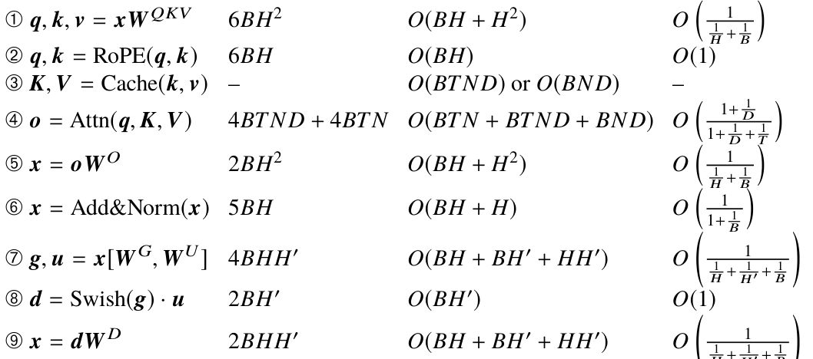
原书 Table 9.2（解码阶段），第 ③ 行即 KV Cache 读写① 公式
② 符号
| 符号 | 含义 | 量纲 |
|---|---|---|
| \(L\) | Transformer 层数 | LLaMA-7B：32 |
| \(N,D,H\) | 头数、每头维度、隐藏维 \(H=ND\) | LLaMA-7B：32、128、4096 |
| \(S\) | 当前序列长度（含已生成部分） | 2048 |
| \(B\) | 批大小 | — |
| 两个 \(2\) | 第一个 = K 与 V 两份；第二个 = FP16 的 2 字节 | — |
③ 推导
- 先看解码一步的注意力。第 \(t\) 步只有一个新 token，它的 query 是 \(\mathbf{q}_{t}\)，注意力输出 \[ \mathbf{o}_{t}=\sum_{j=1}^{t}\alpha_{tj}\mathbf{v}_{j},\qquad \alpha_{tj}=\operatorname{softmax}_{j}\!\Bigl(\frac{\mathbf{q}_{t}^{\top}\mathbf{k}_{j}}{\sqrt{D}}\Bigr). \]
- 关键前提：因果掩码让"过去"不随未来改变。\(\mathbf{k}_{j}=W_{K}x_{j}+b_{K}\) 只依赖 \(x_{j}\)，而 \(x_{j}\) 只由 \(x_{<j}\) 决定（causal mask 把 \(j\) 之后的位置置为 \(-\infty\)）。因此当序列从 \(t\) 延长到 \(t+1\) 时，所有 \(j\le t\) 的 \(\mathbf{k}_{j},\mathbf{v}_{j}\) 逐位相同。这就是 KV Cache 成立的全部理由 —— 不是近似，是恒等。
- 于是第 \(t\) 步只需算一个 token 的 K/V。无 cache 时第 \(t\) 步要把前缀全部重算一遍（\(O(t)\) 个 K/V）；有 cache 时只算新 token 的 \(\mathbf{k}_{t},\mathbf{v}_{t}\)（\(O(1)\)），然后与 cache 拼接。这就是 prefill / decode 两阶段划分的由来：prefill 一次算完 \(S\) 个位置的 K/V 并写 cache（访存 \(O(BTND)\)），decode 每步只往 cache 尾部追加。
- 算显存：逐项乘。一个 token 在一层里的 K（和 V）是 \(N\times D=H\) 个 FP16 数 = \(2H\) 字节；K 与 V 两份 = \(4H\) 字节；\(L\) 层 = \(4LH\) 字节；\(S\) 个 token = \(4LHS\) 字节。
- 代入 LLaMA-7B。\(L=32,H=4096,S=2048\)： \[ 4\times32\times4096\times2048=1.0737\times10^{9}\ \text{bytes}\approx1.00\ \text{GiB}\;(1.07\ \text{GB}). \] 权重则是 \(6.74\times10^{9}\) 参数 \(\times2\) 字节 \(=13.5\ \text{GB}\)（常被约称 14 GB）。单条 2K 上下文请求的 KV 约 1 GB，而权重 13.5 GB；批大小 \(B=8\) 时 KV 变成 8.6 GB，与权重同量级。
- 为什么这成了长上下文瓶颈。解码阶段每步都要把全部权重和全部 KV 从 HBM 读一遍，算术强度只有 \(O\bigl(\frac{1}{1/H+1/B}\bigr)\)（见 Table 9.2 最后一行），远低于 GPU 的 \(I_{\max}\approx150\) FLOP/byte，属于 memory-bound。KV 的字节数与 \(S\) 线性增长，而每步的 FLOP 与 \(S\) 只微增（多头归约项），所以 \(S\) 越大、每 token 的边际成本越高：\(S=128\mathrm{k}\) 时单条请求 KV 就要 64 GB，必须靠 PagedAttention 式的分块、GQA、KV 量化才能装下。
(补充 B)线性量化的完整推导：缩放–舍入–截断，以及 INT4 的显存账本#
出处第 9 章 9.3.1 节 Fundamentals of Quantization / 9.3.3 节（Table 9.3 显存实测） 对照原文
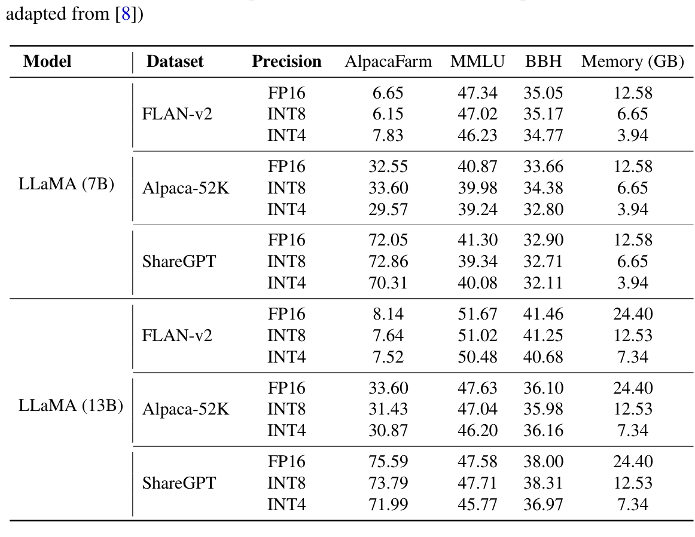
原书 Table 9.3（Memory (GB) 一列即 FP16 / INT8 / INT4 对照）① 公式
② 符号
| 符号 | 含义 | 量纲 |
|---|---|---|
| \(x\) | 原始 FP16 张量元素（可以是标量，或一个被量化块里的元素） | 实数 |
| \(s\) | 缩放因子 / 步长（FP16，不是整数） | 实数，与 \(x\) 同量纲 |
| \(z_{q}\) | 零点（整数），\(z_q=0\) 为对称量化 | 整数，\(\in[0,2^{b}-1]\) |
| \(b\) | 量化位宽 | 整数，4 / 8 / 16 |
| \(\hat{x}\) | 反量化后的重建值 | 实数 |
| \(\operatorname{clip},\operatorname{round}\) | 截断到整数范围；四舍五入（对称量化常用 round-half-to-even） | — |
③ 推导
- 为什么要先
clip。整数量化域只有 \(2^{b}\) 个码字：非对称（\(z_q\) 自由）能用满全部 \(2^{b}\) 个码字；对称（\(z_q=0\)）为了保留正负号，实际可用码字是 \([-2^{b-1}+1,\,2^{b-1}-1]\)（8 位即 \([-127,127]\)，见 9.11）。所以范围必须裁剪，否则超出区间的 \(x/s\) 会被整数溢出回绕（wrap-around），产生完全错误的值。 - 误差精确分解。设 \(x\) 落在可表示范围内（未被 clip），则 \[ \hat{x}-x=s\bigl(x_{q}-z_{q}-x/s\bigr)=s\bigl(\operatorname{round}(x/s+z_{q})-z_{q}-x/s\bigr). \] 括号里的量就是 \(\operatorname{round}\) 的舍入误差 \(e\)，满足 \(\lvert e\rvert\le\frac12\)。于是 \[ \lvert\hat{x}-x\rvert\le\frac{s}{2}. \]
- 误差的均方值：\(s^{2}/12\)。若 \(x\) 在量化格点附近连续分布，则 \(e\sim\mathrm{Unif}[-\tfrac12,\tfrac12]\)，由均匀分布方差公式 \(\frac{(b-a)^{2}}{12}\) 得 \(\mathrm{Var}(e)=\frac{1}{12}\)。因此单元素均方误差 \(=\mathbb{E}[e^{2}]s^{2}=\frac{s^{2}}{12}\)。这就是量化中反复出现的"量化噪声底噪"，与信号幅度无关，只与步长有关。
- 截断误差：另一种误差源。若 \(\lvert x\rvert\) 大于 \(s(2^{b-1}-1)\)，则 \(x_{q}\) 被钉在边界，误差变成 \(\lvert x\rvert-s(2^{b-1}-1)\)，随 \(\lvert x\rvert\) 线性增长、远大于 \(s/2\)。所以 \(s\) 的选取是"舍入误差 vs 截断误差"的经典权衡：\(s\) 太小则截断损失尾部；\(s\) 太大则舍入噪声整体抬高。这就是为什么原书强调要按校准集上的实际数据分布（min-max 或分位数如 99.9%）确定截断范围，而不是理论范围。
- 为什么要有零点 \(z_{q}\)。对称量化要求 0 映射到整数 0，代价是必须用 \(\max(\lvert x_{\min}\rvert,\lvert x_{\max}\rvert)\) 定 \(s\)，于是"单边偏斜"的分布（如 ReLU 后的全正激活）会浪费近一半码字：区间 \([-13.6,1.2)\) 里没有任何真实数据（原书 9.3.1 的例子正是如此），量化误差变大。仿射（非对称）量化用两个自由度：令边界 \(x_{\min}\mapsto0,\ x_{\max}\mapsto2^{b}-1\)，解线性方程组 \[ s=\frac{x_{\max}-x_{\min}}{2^{b}-1},\qquad z_{q}=-\operatorname{round}\!\left(\frac{x_{\min}}{s}\right), \] 让非零区间正好铺满码字 —— 这就是 9.3.1 节例子里 \(S=0.0975,\ Z=-12\) 的来历，量化值 \(\mathbf{X}_{q}=[[-127,-103,-78],[78,103,127]]\) 也随之而来。
- group-wise 量化的误差–分组关系。设一组 \(g\) 个元素共用一对 \((s,z_q)\)，整组的均方误差为 \(\frac1g\sum_i \frac{s_{g}^{2}}{12}\)。组越小，组内动态范围越窄、\(s_g\) 越小，误差越接近 0（\(g=1\) 即 per-element，误差恒为 0，但那样就没法用整数矩阵乘）。代价是量化参数变多：\(N\) 个元素、每 \(g\) 个一组，需 \(N/g\) 对 \((s,z_q)\)。以 LLaMA-7B、\(g=128\)、每组约 4 字节计，开销 \(\approx7\times10^{9}/128\times4\approx219\ \text{MB}\)，约占 INT4 权重的 6%。
- 显存账本：14 GB → 3.5 GB。FP16 每参数 2 字节，7B 参数 \(=13.5\ \text{GB}\)（约 14 GB）；INT4 每参数 0.5 字节（4 bit + 组量化参数），\(=3.5\ \text{GB}\)，压缩比 \(16/4=4\times\)。原书 Table 9.3 的实测：LLaMA(7B) 12.58 GB（FP16）→ 6.65 GB（INT8）→ 3.94 GB（INT4），13B 为 24.40 → 12.53 → 7.34 GB；比值与 \(2\times8/4\) 的理论值基本一致，多出的部分是量化参数与运行时开销。
(补充 C)投机解码（speculative decoding）的无损性证明#
出处第 9 章 9.2.3 节 Algorithm-Level Optimization（Speculative Decoding） 对照原文
① 公式
② 符号
| 符号 | 含义 | 量纲 |
|---|---|---|
| \(p\) | 目标（大）模型在第 \(t+i\) 步的真实条件分布 | 词表上的概率分布 |
| \(q\) | 草稿（小）模型的提议分布 | 概率分布，通常比 \(p\) 尖锐 |
| \(\gamma\) | 每轮草稿步数 | 整数，常取 4–8 |
| \(\alpha\) | 逐 token 平均接受概率（假设各步独立同分布） | \(\alpha\in[0,1]\) |
| \(\mathbf{x},\tilde{y}_{t:t+\gamma}\) | 上下文；本轮的 \(\gamma\) 个草稿 token | 离散 token 序列 |
③ 推导
目标：证明"一轮接一轮"产生的每一个 token，其边际分布都恰好等于直接从 \(p\) 采样。这是投机解码区别于所有近似加速技术的根本性质。
- 为什么验证能一次并行做完。把 \(\gamma\) 个草稿 token 拼到上下文后面，用一次前向配合因果掩码，天然得到 \(p(y_{t+i}\mid \mathbf{x},\tilde{y}_{t:t+i-1})\) 对所有 \(i=1..\gamma\) 的值，外加第 \(t+\gamma+1\) 步的分布（可作 bonus token）。代价约等于一步解码 —— 这就是加速的来源。
- 接受规则的来历。我们希望"接受 \(\tilde{y}\)"这个事件把概率质量 \(q(\tilde y)\) 搬到 \(p(\tilde y)\) 上。若按 \(p(\tilde y)/q(\tilde y)\) 接受（不截断），当 \(p>q\) 时会过度接受（超发质量）；当 \(p<q\) 时接受概率小于 1，剩下 \(q-p\) 的多余质量必须由第 3 步补回。故取截断比 \(\min(1,p/q)\)：只在 \(p\ge q\) 时全额接受。
- 残差分布的定义与归一化常数。被拒绝的总概率为 \[ Z=\sum_v\bigl[q(v)-\min(p(v),q(v))\bigr]=\sum_v\max(0,\,q(v)-p(v)). \] 又因为 \(\sum_v p=\sum_v q=1\)，正偏差之和等于负偏差之和，正偏差之和也等于 \(Z\)；而总变差距离定义为 \(\mathrm{TV}(p,q)=\frac12\sum_v\lvert p(v)-q(v)\rvert\)，因两者正负部分相等，故 \[ Z=\sum_v\max(0,p(v)-q(v))=\mathrm{TV}(p,q)\in[0,1]. \] 所以残差分布合法（各点非负且和为 1）。
- 验证边际分布就是 \(p\)。固定一个 token \(x\)，它被输出有两条路径：
- 被接受：概率 \(\sum_v q(v)\cdot\mathbf{1}\bigl[v=x,\ \text{接受}\bigr]=q(x)\min\bigl(1,\frac{p(x)}{q(x)}\bigr)=\min(p(x),q(x))\)（用到了 \(p,q\) 非负与 \(\min(a,b)\cdot a/b=\min(a,b)\)）。
- 草稿被拒后从残差采到：总拒绝概率为 \(Z\)（第 3 步），乘上残差分布在该点的概率 \(\frac{\max(0,p(x)-q(x))}{Z}\)，得 \(\max(0,p(x)-q(x))\)。
- 多轮情形。由于每轮都以"当前前缀 + 已接受 token"为条件，重复应用第 4 步（对每个后续位置条件化），由全概率公式逐位置条件化，逐 token 的边际分布仍是 \(p\)。于是整条输出序列的联合分布与直接从 \(p\) 自回归采样完全一致。
- 期望输出长度。设各步接受概率独立同分布为 \(\alpha\)，"连续接受 \(k\) 个草稿"的概率为 \(\alpha^{k}(1-\alpha)\)（几何分布）。全部接受时额外送 1 个 bonus token，则 \[ \mathbb{E}[\text{输出}]=1+\sum_{k=1}^{\gamma}k\alpha^{k}(1-\alpha) =1+(1-\alpha)\cdot\frac{\alpha\bigl(1-\alpha^{\gamma}\bigr)}{(1-\alpha)^{2}} =\frac{1-\alpha^{\gamma+1}}{1-\alpha}. \]
- 加速比与 \(\gamma\) 的最优取值。设草稿单步耗时为 \(c_q\)、目标模型单步耗时为 \(c_p\)（\(c_q\) 远小于 \(c_p\)，因为小模型小得多且可以并行），一轮耗时约为 \(c_p+\gamma c_q\)。加速比 \[ \text{speedup}\approx\frac{\frac{1-\alpha^{\gamma+1}}{1-\alpha}}{c_p+\gamma c_{q}}, \] 其中分子对 \(\gamma\) 有饱和（趋近 \(\frac1{1-\alpha}\) 封顶），分母随 \(\gamma\) 线性增长，故最优 \(\gamma\) 大致与 \(\frac{c_p}{c_q}\) 同阶。例：\(c_q=0.1c_p,\alpha=0.8,\gamma=5\)，分子 \(=(1-0.8^{6})/0.2=4.95\)，分母 \(=1+0.5=1.5\)，加速约 3.3 倍。
(补充 D)三种并行的通信量对照，以及 PagedAttention / 连续批处理#
出处第 9 章 9.2.2 节 System-Level Optimization（PagedAttention、Batch Management） 对照原文
① 公式
② 符号
| 符号 | 含义 | 量纲 |
|---|---|---|
| \(\Psi\) | 全部参数的字节数 | 字节 |
| \(B,S,H\) | 批大小、序列长、隐藏维 | 整数；LLaMA-7B：\(H=4096\) |
| \(k,m\) | 流水段数 / 微批数 | 整数 |
| \(\lambda,\bar{W}\) | 请求到达率 / 平均驻留时间（decode 墙钟时间） | 请求每秒 / 秒 |
③ 推导
- 数据并行（Data Parallel / DDP / ZeRO）。每个副本算自己的梯度，需要 all-reduce 求平均：ring all-reduce 传输量约为 \(2\Phi(k_{\mathrm{dev}}-1)/k_{\mathrm{dev}}\approx2\Phi\) 字节，其中 \(\Phi\) 是单副本梯度字节数；ZeRO 把优化器状态、梯度、参数按阶段切分，进一步把每卡通信 / 存储降到 \(1/k_{\mathrm{dev}}\)。通信与模型大小成正比，但与单请求延迟无关：DDP 只对吞吐有帮助，对单请求 TTFT 没有改善。
- 张量并行（Tensor Parallel, Megatron 式）。把 \(W\in\mathbb{R}^{H\times4H}\) 按列切成 \(k\) 份，每卡算 \(\mathbf{Y}^{(r)}=\mathbf{X}\mathbf{W}^{(r)}\)，输出是部分和，必须 all-reduce（或 reduce-scatter + all-gather）。计算量每卡为 \(2BSH\cdot4H/k=8BSH^{2}/k\)，通信量每次 all-reduce 是激活字节数 \(2BSH\cdot2=4BSH\)（FP16）。每层两次（注意力后、FFN 后），于是 \[ \frac{\text{通信}}{\text{计算}}\approx\frac{8BSH}{8BSH^{2}/k}=\frac{k}{H}, \] 即通信量与计算量都随 \(k\) 同比例增长，比值约 \(1/H\)（每卡通信 \(4BSH\)、每卡计算 \(8BSH^{2}/k\)，比值 \(\frac{k}{2H}\)，这里略去常数 2）。\(H=4096\) 时约 \(10^{-4}\) 字节/FLOP，对比 NVLink 带宽/算力比（约 \(10^{-3}\)）还有余量，所以 TP 可行；这也解释了为什么 TP 度一般不超过 8 且要求 NVLink。
- 流水并行（Pipeline Parallel）。每段只传边界的激活 \(BSH\cdot2\) 字节，通信量比 TP 小约 \(H\) 倍；代价是气泡：朴素 1F1B 调度下，一个 micro-batch 要依次经过 \(k\) 段，段 \(r\) 空闲 \((r-1)\) 步，总步数 \(m+k-1\)，气泡率 \(\frac{k-1}{m+k-1}\)。\(m\gg k\) 时气泡率小。实际用 interleaved 1F1B 把气泡率再除以一个"虚拟段数"因子。
- 三种并行的分工（结论）。通信/计算比：DP 正比于 \(\Psi\) 但可与计算重叠且不影响延迟；PP 正比于 \(1/H\) 且最小，但有气泡；TP 正比于 \(1/H\) 且与设备数无关、最吃带宽。切分粒度越细 → 通信占比越高、单卡显存越省，但需要越强的互联。这就是 Megatron-LM 的 3D 并行：TP 放在 NVLink 域内、DP 放在跨节点（可用 InfiniBand 或梯度压缩）。
- 连续批处理（continuous batching, vLLM）。固定批必须等最长的请求结束才能整批换入，导致 GPU 在 batch 填充率低时空转。连续批处理把每个请求当作独立单元：完成的请求立即被新请求（或待处理的 prefill）填补，batch 大小随时间变化，从而把解码阶段的 \(B\) 提高、抬高算术强度（Table 9.2 中解码的算术强度正比于 \(\frac{1}{1/H+1/B}\)）。所需并发数由 Little 定律给出：稳态下"到达率 \(\times\) 平均驻留时间 \(=\) 系统内平均请求数"，所以要把排队时延压到可接受范围，配置的并发槽位必须约为 \(\lambda\bar W\)；槽位太多会撑爆 KV 显存。
- PagedAttention 为什么必要。传统 KV cache 拼接需要重新申请显存并把旧 cache 与新 token 拷贝过去：拷贝带来 \(O(BSH\cdot2)\) 字节的额外访存，且反复分配产生外部碎片（最大可用块小于最大连续块之和）。vLLM 的做法是把显存预切成固定大小的 block（页），用一张 block table 做间接寻址，追加只写新块、不拷贝旧块 —— 显存访问量从 Table 9.2 的 \(O(BTND)\) 降到 \(O(BND)\)（与序列长 \(T\) 无关），并把碎片降到近似为零。